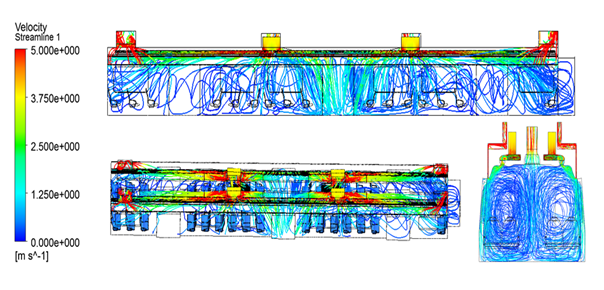
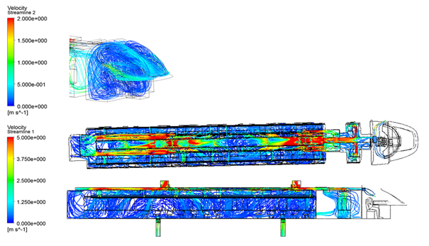

超算云首页
>
云服务
机车通风系统CFD分析
结合国家超级计算济南中心的硬件和软件资源优势，建立精细的仿真计算模型，更加真实地模拟实际模型，取得更准确的模拟结果，最大化降低产品开发成本。
列车空调通风系统决定着旅客车厢内空气的温度、湿度、流速等因素,从而直接影响旅客乘坐的舒适性。随着高速列车技术的发展，优良的空调通风性能也成为列车设计的重要指标。不断改善列车内空调的通风性能，为乘客提供高品质的空气，满足乘客的乘车舒适性，具有十分重要的现实意义。
传统的设计方法是利用物理试验来验证空调系统性能的优劣，产品的最终方案需要经过多次物理实验对吧，不仅需要消耗大量的人力、物力和财力，并且产品研发周期长，很难满足列车快速发展的需求。随着计算机和计算流体动力学（CFD）技术的不断发展，CFD模拟成为研究机车内部空调通风系统性能和机车内流场分布的最重要手段。
Ø高速列车空调通风系统性能研究过程中需要进行大量的CFD仿真计算，由于列车空调通风系统技术网格数量多，计算精度要求越来约高，很多模型在工程师的个人服务器上计算需要两三个周甚至更长的时间。
Ø企业内部的高性能计算资源有限，大部分计算项目长时间处于等待状态，严重影响新产品的研发进度。
Ø企业自建高性能计算中心投入大，周期长，研发任务少时集群利用率低，又会造成资源浪费。
通过超算的硬件资源优势和CFD软件相结合，可以对列车空调系统进行全方位的模拟，找出空调系统的结构不合理之处，并且可以进行多方案的对比来实现空调系统多达到的要求，可以通过加密网格捕捉到细小几何尺寸，同时进行机车内部空间流场及温度场的非定常计算，以获得更精确的计算结果。

图：机车通风实验仿真效果